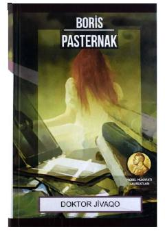

DJInqilobiy davr girdobida qolgan shifokor va shoirning taqdiri haqidagi klassik roman.
Boris Pasternakning ushbu mashhur romani Rossiya tarixidagi inqilobiy davrlar va fuqarolar urushi fonida shifokor va shoir Yuriy Jivaqoning murakkab taqdirini tasvirlaydi. Asar inson ruhiyati, sevgi va tarixiy o'zgarishlar qarshisidagi shaxsiy tanlovlar haqida hikoya qiladi.